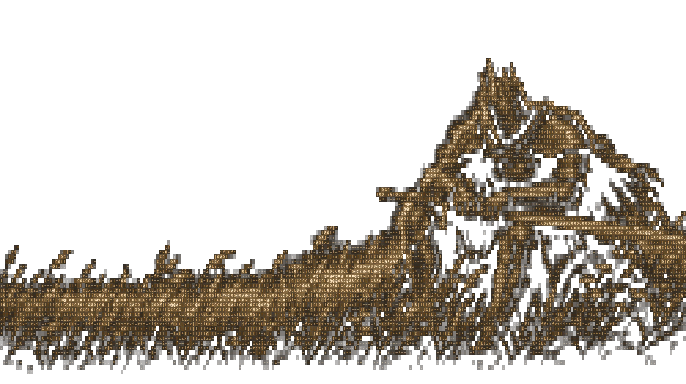

katharos
Deixa qualquer Windows leve de novo. Explica cada ajuste antes de mexer e desfaz qualquer um.
καθαρός · em grego, limpo

- funciona em
- Windows 10 e 11
- ajustes
- 170, explicados um a um
- instalação
- nenhuma, é um arquivo
- preço
- grátis, código aberto
Um menu.
Tudo dentro.
Abra, digite um número. Cada tela mostra o que vai mudar antes de mudar.
Conhecer
Só olha, não muda nada.
raioxnota e o que fazermedirantes e depoismemoriaquem usa a RAM
Limpar e aliviar
Espaço e segundo plano.
limparlixo e cachesprogramasbloatwareservicoso que não usa
Privacidade e IA
Menos coleta e anúncio.
privacidadetelemetriaiaCopilot e RecallnavegadorChrome e Edge
Manter
Voltar atrás e cuidar.
desfazervalor por valoragendartoda semanaturbotudo de uma vez
Três modos.
O modo só decide o que vem marcado. Você desmarca o que quiser, ou usa --teste para só ver.
seguro
Só o que não tem contrapartida. Bom para o PC do trabalho.
equilibrado
O seguro mais o que quase ninguém usa. O recomendado.
extremo
Tudo que ajuda neste PC. Cada item diz o que você perde.
Rápido,
não inseguro.
Mesmo no modo extremo, isto fica de fora. De propósito.
Desligar o Defendero antivírus fica ligadoBloquear o Windows Updateele atualizaFirewall, UAC, SmartScreenintocadosIntegridade de Memóriaganho pequeno, risco grandeDesligar a memória virtualprogramas fechariamApagar arquivos seus de vezvão para a Lixeira
Desfazer exato
Guarda cada valor antes de mudar. Volta tudo, um por um.
Nada trava
Etapa travada é encerrada e o resto segue.
Sem truque
Só ferramentas oficiais do Windows.
Três passos.
Windows 10 ou 11. Ele pede administrador sozinho.
Baixe e extraia
O ZIP tem tudo que precisa.
Abra o KATHAROS.bat
Abre no PowerShell, já como administrador.
Digite
1O raio-x diz o que fazer depois.
Perguntas.
As que todo mundo faz antes de rodar.
É seguro?
Ele cria um ponto de restauração antes, guarda cada valor que muda e desfaz tudo com um comando.
Preciso instalar algo?
Não. Ele usa o Python que você já tem. Só instala o oficial se não houver nenhum.
Vai deixar meu PC mais rápido?
Quase sempre: menos programa no fundo, menos disco cheio. O raio-x mostra a diferença em números.
Quanto custa?
Nada. O código está aberto no GitHub.